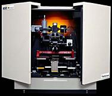
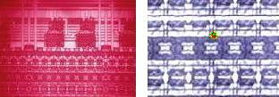

|
Photoemission
Microscopy
Photoemission microscopy,
or light emission microscopy
(LEM),
is a relatively new failure analysis technique for detecting
photonic radiation from a defect site, primarily due to carrier
recombination mechanisms.
Such defect sites emit
light
during device operation which would otherwise be absent in a normal device.
Such photoemissions, being very low-level, are not visible to the naked eye.
Photoemission microscopy uses a powerful image intensification
technology to
amplify
the
light
emitted by photo-emitting defect sites. The resulting radiation image is then
overlaid
with its corresponding die
surface image, such that the emission spot coincides with the precise
location of the defect. A CCD camera and a computer are used to accomplish this feat.
Other FA techniques are then performed to look for the physical anomaly
responsible for the abnormal light emission.

Fig. 1.
Example of a Light Emission Microscope
Photoemission
microscopy
applications include but are not limited to the following :
1) detection of previously unknown or undetectable
electroluminescence;
2) detection of
avalanche luminescence from junction breakdowns,
junction defects, currents due to saturated MOS transistors, and
transistor hot electron effects; 3) detection of
dielectric
electroluminescence from current flow through SiO2 and SiN.

Fig. 2.
Examples of light emission images
Caution
must be exercised when
performing light emission microscopy because
not all abnormal
light emissions emanate from the
actual
defect site itself.
Some defect sites can drive a good transistor to
saturation,
making it emit light that can easily be misinterpreted as anomalous by a
novice analyst. LEM results should always be
complemented
by results from other FA techniques such as high power inspection and
microprobing to prevent inaccurate FA conclusions.
See Also:
Failure
Analysis; All
FA Techniques; Curve Tracing;
Microthermography
Microprobing; FA Lab
Equipment; Basic FA
Flows;
Package Failures; Die
Failures
HOME
Copyright
© 2001-2005
www.EESemi.com.
All Rights Reserved.
|